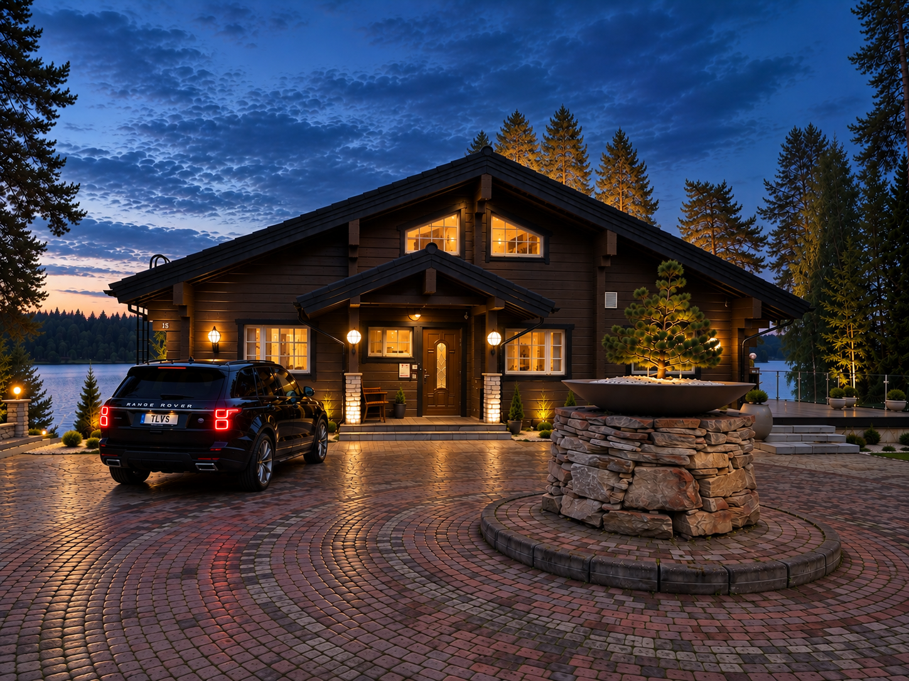
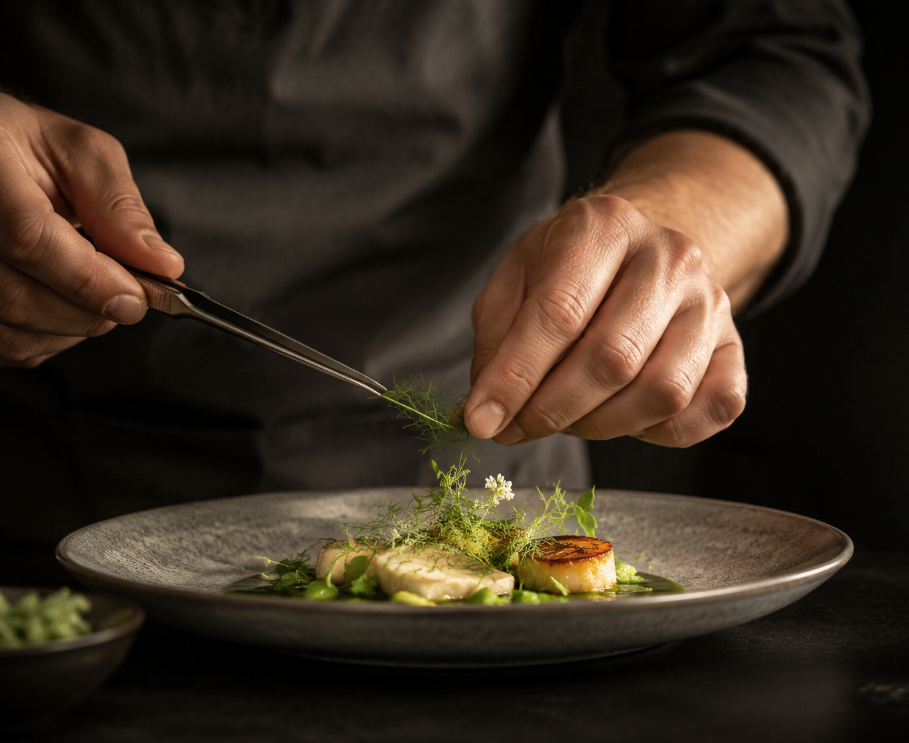
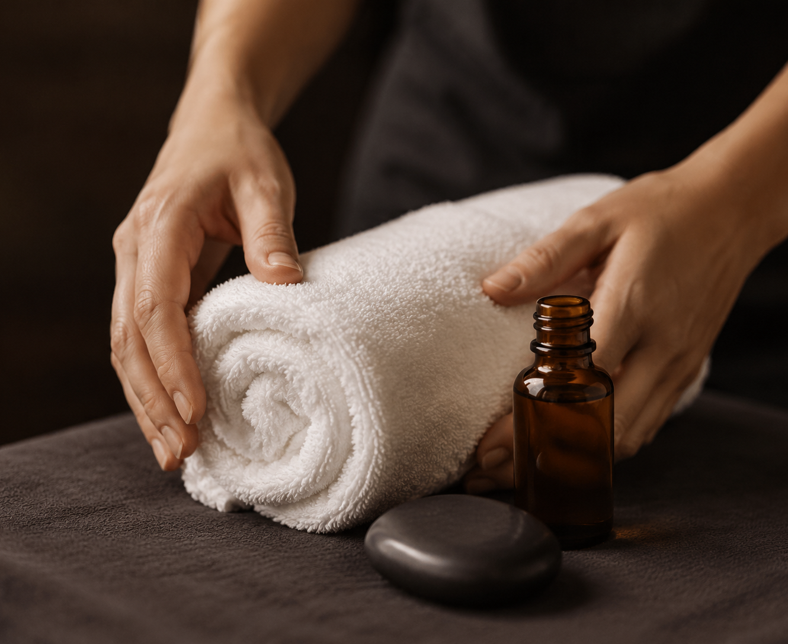

Arranged around your stay
A prepared villa. Local people. Discreet help when you want it.
A lakeside stay, with the details taken care of
The villa feels entirely your own. Behind that privacy is Tahko's local service network — property care, dining, wellness, transfers and practical extras that can be arranged around each stay.
Support around your stay
Services are arranged individually and are subject to availability and confirmation for each stay.
Your villa, ready for you
Cleaning, linen, laundry, maintenance, security and year-round care can be handled locally, so the property is ready before guests arrive and cared for after they leave.
- Guest changeover & cleaning
- Linen & laundry
- Property maintenance
- Local support & assistance
- Summer grounds & winter snow

Dinner, without leaving home
Local catering, groceries and chef-led dining can be arranged for relaxed evenings at the villa.
- Local chef by arrangement
- Catering to the villa
- Groceries & provisions
- Dinner and event support

Wellness comes to you
Massage and wellness services can be brought to the accommodation, complementing the villa's own pool, sauna and fireside spaces.
- Massage to the villa
- Private spa day
- Additional wellness services — on request
From arrival to the front door
Airport, railway and local transfers can be arranged through the Tahko service network — a smooth arrival from airport or railway station to the villa.
- Airport transfer
- Railway station transfer
- Local taxi & group transport
Make the stay your own
A wood-heated hot tub can be delivered to the villa, and the local network can arrange equipment, activities and practical extras. The service promise stays deliberately broad.
Private, yet connected to Tahko
A sheltered lakeside setting, supported by Tahko’s local service network.